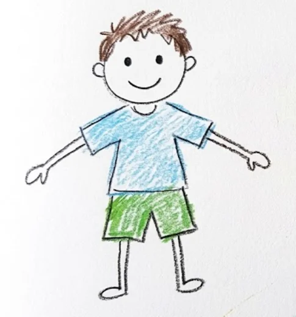
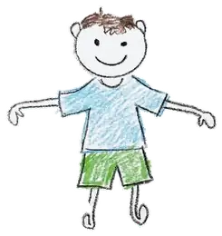

Upload
A photo of the paper drawing is uploaded from Story Studio.
Story StudioEduVision turns a child's paper drawing into an animated character for stories and learning games, entirely on the school's own computer.




Real outputs for one drawing. Nothing is generated: the moving character is the child's own drawing, bent by a skeleton.
A photo of the paper drawing is uploaded from Story Studio.
Story StudioOur own pose model, trained on children's drawings, finds the figure and 17 keypoints.
YOLOv8n-poseU²-Net plus pen-line detection separates the figure from the paper.
rembg + OpenCV
A teacher can fix joints in the Fixer. A triangle mesh is pinned to the skeleton.
Fixer · DelaunayMotion-capture data moves the skeleton; ARAP bends the drawing naturally.
ARAP · BVHThe mesh is built and factorised once, then reused for every frame. About 2.4 s per motion.

docs/assets/screenshots/demo-video.pngFrom the trained model file and a benchmark script in the repo. RTX 2050 laptop, 27 November 2026.

Training history read from best.pt · 96 epochs on Google Colab
For admins, teachers, parents and students. Children log in by tapping their avatar.
No generative AI. No API keys. ₹0 to run, not ~₹2.9 lakh per class per year.
Proofs, metrics, decisions and limits, all written down.
:5173Story Studio:3001Activity Center:5000:4000Story Engine:3000AI Server:5001